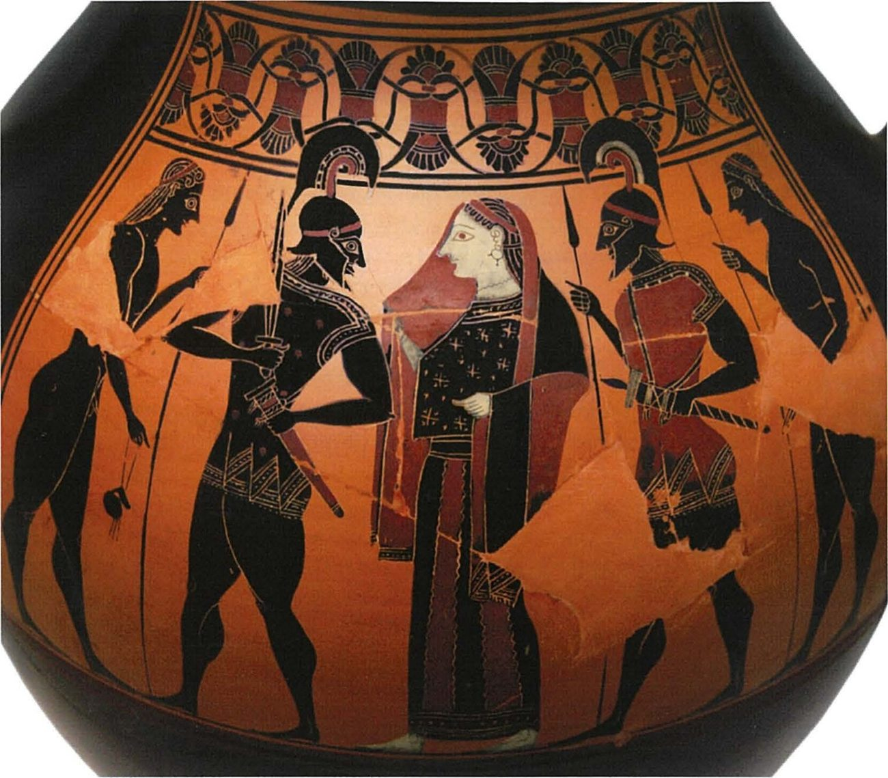
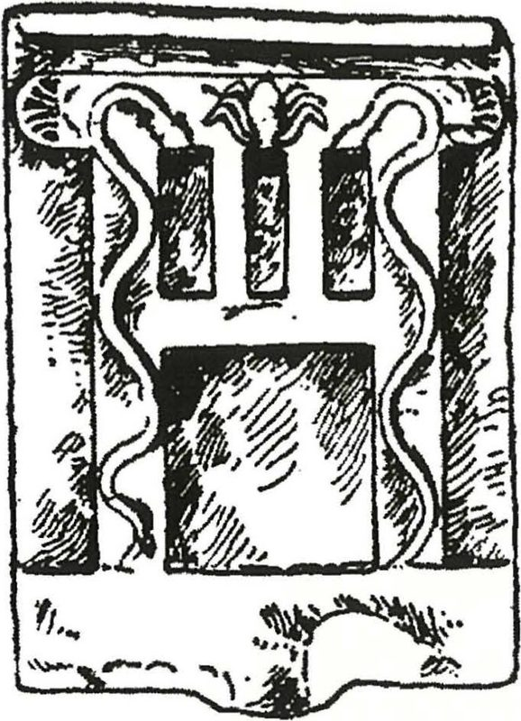
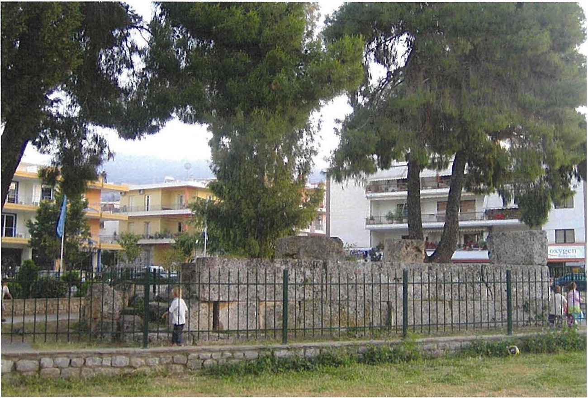

Spartan society to the Battle of Leuctra 371 BC · Lesson 22
Religion II: myths, kings and burial
What do Sparta’s myths, its kings’ rituals and its treatment of the dead reveal about Spartan society?
Year 12 Ancient History · Section II, Option G · Present with → or space · Read on a phone with R

Connect · 3 minutes · cold call
From festivals to myths, kings and the dead
The gods of Sparta — Apollo, Artemis Orthia, Poseidon — and Apollo’s three festivals, the Karneia, the Hyakinthia and the Gymnopaedia, which honoured the god and drew the community together.
Lycurgus was given a temple and worshipped after his death, as hero or god; the twin Dioscuri went to war with the kings; the kings held two priesthoods of Zeus, and a royal funeral was followed by ten days without public business.
The bones of Orestes · omens before battle · how ordinary citizens and soldiers were buried · hero cult. Then one HSC question that draws on all of it.
One key idea from Lesson 21, in one sentence.
Learning intentions and success criteria · 2 minutes
Today’s goals
- evaluate what myths and burial evidence reveal about Spartan society
- explain significance rather than simply describe
- explain two functions of Spartan myths, with evidence
- explain one way religion strengthened a king and one way it limited him
- compare a royal funeral with an ordinary Spartan death, using Herodotus 6.58 and Plutarch, Lykourgos 27.2
- plan an answer on what evidence reveals about religion in Sparta
Only Spartans killed in war were buried where they fell; ordinary citizens were buried inside the city. And Plutarch’s manuscripts name a priestess, not a woman who died in childbirth, among those whose names could be inscribed.
Note-making · today’s routine
How to structure your notes
questions and key terms
short phrases, arrows (→ led to), abbreviations (Hdt = Herodotus, K. = king)
- 1Listen and look firstDon’t copy while the slide is being explained.
- 2Write your own notes at each ✎ checkpointPhrases, not sentences. Arrows for cause and effect.
- 3Compare with the model notesThey appear one row at a time. Add what you missed in a second colour.
- 4Copy each cue question into the left columnLater, cover your notes and answer the cue questions from memory.
- 5Finish with a three-sentence summaryFive checkpoints: myths that did a job · the kings as priests · the citizen and the soldier · the king’s funeral · hero cult.
Key vocabulary
Words you will use today
| Myths and kings | Meaning |
|---|---|
| myth | a traditional story about gods and heroes; at Sparta, often used to explain and justify |
| legitimacy | the accepted right to rule, or to hold land |
| Heraclids | descendants of the hero Heracles, as both royal houses claimed to be |
| Dioscuri | the twins Castor and Polydeuces, also called the Tyndaridae (Lesson 4) |
| omen | a sign of the gods’ will, read, for example, from a sacrificed animal |
| agathoergoi | five men who left the hippeis each year and were sent on state missions (Herodotus) |
| Death and burial | Meaning |
|---|---|
| hero cult | worship of a remarkable dead person at one place, usually the grave; the shrine is a heroon |
| demigod | a being between human and god; Xenophon says dead kings were honoured as demigods |
| memorial | a stone that records a name; at Sparta, small and plain |
| epitaph | words inscribed on a tomb or memorial |
| patronymic | a father’s name, added to a person’s own |
| emendation | a modern correction to the wording of an ancient text |
Spelling: Cooley’s translations use Greek forms (Lykourgos, Herakles, Dioskouroi, Tyndaridai, Lakedaimonians, Plataia, Thermopylai). In your own writing use Lycurgus, Heracles, Dioscuri, Tyndaridae, Lacedaemonians, Plataea, Thermopylae.
1 · Myths that did a job · I do — the question to ask of every myth
Not “what happened?” but “what did the story do?”
For Zeus himself, the son of Kronos and husband of fair-crowned Hera,
Has given this city to the sons of Herakles;
Together with them we forsook windy Erineos
And arrived in the wide island of Pelops.
Tyrtaios, fragment 2 · mid-7th century BC, probably a Spartan poet · quoted by Strabo · trans. K. Hughes · Cooley A3
The 2024 HSC asked students to explain “the importance of myths and legends for Spartan society”. NESA’s sample used three: Lycurgus, the Dioscuri and the Trojan War heroes at the Menelaion. Today adds the sons of Heracles and Orestes.
Who are “the sons of Herakles”? What does the story give them?
The ancestors of both royal houses. Zeus himself gave them the city: a god-given title to Sparta and its land.
Cavanagh: “the Spartans bridged the gap by reference to myth, notably that the Spartan kings as the descendants of Herakles had a right to the land” — but “How much, if any, historical truth lay behind the myths we cannot say.”
Tyrtaeus also tells soldiers, “But be confident, for you are descended from invincible Herakles” (fr. 11, Cooley A8). What job does the myth do there?
It turns ancestry into courage: the same myth that justified the kings steadied men in the battle line.
1 · Myths that did a job · We do · 8 minutes · Worksheet L22
Myth → function
| Myth | Evidence | The job it did |
|---|---|---|
| The sons of Heracles | Tyrtaeus: Zeus gave the city “to the sons of Herakles” (A3); “you are descended from invincible Herakles” (A8) | legitimacycourage the kings’ right to the land; confidence in battle |
| Lycurgus and Delphi (Lesson 3) | The Pythia: “I know not whether to worship you as hero or god”; a temple after his death (Herodotus 1.65–66, F3) | legitimacy laws with Apollo’s approval, and so hard to change |
| The Dioscuri (Lesson 4) | One of the Tyndaridae, probably as an image, went to war with the king who led the army (Herodotus 5.75, D6); Plestiadas’ relief, “dreading their wrath” (C28) | kingshipunity twin heroes beside twin kings; feared as well as honoured |
| Helen and Menelaus | Offerings at the Menelaion: a bronze object inscribed “To Helen”, c. 570 BC (C30); a stele dedicated to Menelaus, early 5th century BC (C31) | identity a link to the age of heroes, probably at the place they were thought to have lived |
| Orestes | Delphi told the Spartans to bring his bones home from Tegea (Herodotus 1.67–68, H10) — next slide | foreign policy probably a claim on the heroes of the Peloponnese before the Dorians |
Swipe the table sideways to see it all. Square brackets in a translation mark words restored by modern editors. Another Menelaion offering reads “Deinis dedicated these to [Helen, wife of] Menelaos” (C29, mid-7th century BC): Helen’s name there is a restoration, so C30’s plain “To Helen” is the firmer evidence.
1 · Myths that did a job · We do — myth as foreign policy
Herodotus: the bones of Orestes
[67.2] Having suffered constant defeat in this war at the hands of the Tegeans, they sent envoys to Delphi to ask which god they should seek to propitiate in order to defeat the Tegeans. [67.3] The Pythia declared to them that they must bring home the bones of Orestes, the son of Agamemnon. …
[68.1] Lichas was one of these and by a mixture of luck and intelligence he found the body in Tegea. …
[68.6] … having taken up residence he opened the grave, gathered up the bones, and carried them off back to Sparta. And ever afterwards, whenever the two states came to hostilities, the Lakedaimonians proved by far the stronger.
Herodotus, Histories 1.67.2–68.6 (parts) · written c. 450s–420s BC, about events of c. 550 BC · from Halicarnassus, not a Spartan · trans. B. Wilson · Cooley H10. Lichas was one of the agathoergoi.
Who decided what Sparta should do?
Delphi. The Spartans asked which god to win over, and the Pythia told them — twice, since they needed a second oracle to find the grave.
Why Orestes?
He was “the son of Agamemnon”, a ruler from before the Dorians came. Cooley: it seems “the Spartans were trying to bridge the gap between themselves as Dorians and non-Doric peoples such as the Arkadians and Achaians”.
How does Herodotus explain the victory?
As the result of obeying the oracle: once the hero came home, Sparta won.
1 · Myths that did a job · I do — weighing the story with O, V, P, R, L
What can a story like this tell a historian?
| Code | Model margin note |
|---|---|
| O | Hdt, c. 450s–420s BC, not a Spartan; about a century after c. 550 BC → oral tradition |
| V | shows Delphi steering Spartan policy; a hero’s bones as a source of power |
| P | explains how Sparta came to beat Tegea, and why Sparta was strong (Croesus’ search for allies) |
| R | the smith found a coffin “more than ten feet (three metres) long” and “a corpse as big as the coffin” → legend, not fact |
| L | leaves out how the war ended: Cooley says Sparta “finally decided to conclude a treaty” |
Cooley: “We do not know whether this measure did indeed have any direct success”: the tomb survived into Roman times, “but we have no evidence that this particular mythical connection was of much use later on”.
Not what happened in a forge at Tegea, but what Spartans and Herodotus believed: Delphi’s word counted, and a hero’s relics carried “a strong symbolic value” (Cooley).
Many Spartan myths were tied to a place, a ritual or a song: Orestes’ tomb, the Menelaion, Castor’s tomb at Sparta.
1 · Myths that did a job · the Dioscuri and the kings If time
Twin heroes, twin kings — deepening Lesson 4

After a quarrel between the kings, c. 506 BC, a law let only one king lead an army, and “one of the Tyndaridai would also be left behind” (Herodotus 5.75, Cooley D6).
Plutarch says the Spartans’ ancient image of the Dioscuri, the dokana, was two upright beams joined by two crosspieces — a sign of brotherly unity (On Brotherly Love 1, paraphrased; not in Cooley).
Simonides of Keos, a poet working around the time of the Persian Wars, imagines the Spartans leaving for Plataea in 479 BC “With the horse-taming sons of [ ... ] Zeus, / The [Tyndarid]ai heroes, and mighty Menelaos” (Cooley A21). Letters in brackets are restorations; [ ... ] marks words lost.
No source says the dual kingship was modelled on the twins. Argue that the evidence suggests religion reinforced it.
Notes checkpoint 1 of 5
Myths that did a job
Write your own notes first. Then compare, row by row, and add what you missed in a second colour.
2 · The kings as priests · I do — recall Lesson 4, then go deeper
Priests of the city
- two priesthoods, of Zeus of Lacedaemon and Zeus, Lord of Heaven (Herodotus 6.56, D5)
- an animal to sacrifice at Apollo’s temple on the 1st and 7th of every month, paid for by the state (6.57, D8)
- the first libations at public sacrifices (D8)
- two Pythians each, envoys to Delphi; “the official guardians of all oracles” (D8)
- sacrifices from home to the frontier on campaign (Xenophon, D7)
[2] He laid it down that the king, by virtue of his divine origin, shall offer all public sacrifice on behalf of the state; that he shall lead the army on all expeditions sent out by the state;
Xenophon, Constitution of the Lakedaimonians 15.2 · probably late 390s or 380s BC · an Athenian admirer who fought for King Agesilaus · trans. B. Wilson · Cooley D9
What links today’s first myth to the kings’ priesthood?
“Divine origin”: the kings descended from Heracles, son of Zeus. The myth is the reason a king sacrifices for the whole state.
Cooley: the king’s religious role included “carrying out all important sacrifices, especially those at the crossing of the Lakonian border and sacrifices before battles”.
2 · The kings as priests · We do — two extracts
Sacrifice and omens in war
[3] Only when the omens from the sacrifices to both these gods are seen to be good does he cross the country’s frontier. The fire from these two sacrifices leads the way and is never quenched … the king starts the rituals before dawn while it is still dark, hoping to win first call on the god’s goodwill ahead of the enemy.
Xenophon, Constitution of the Lakedaimonians 13.3 · probably late 390s or 380s BC · trans. B. Wilson · Cooley D7. The two gods are Zeus and Athena.
[61.2] … They made a sacrifice on the point of engaging with Mardonius and his army, [61.3] but the sacrifices were not propitious for them, and at the same time many of them fell and many more were wounded … Pausanias looked to the temple of Hera at Plataia and called upon the goddess, asking that they should not be cheated of their hopes. [62.1] Even while he was still calling on her, the Tegeans rose up at the front and went at the Persians, and immediately after Pausanias’ prayer, the Lakedaimonians who were conducting the sacrifices found the omens favourable.
Herodotus, Histories 9.61.2–62.1 · written c. 450s–420s BC · trans. B. Wilson · Cooley E86
What must happen before the king crosses?
Good omens from sacrifices to Zeus and Athena. No good omens, no invasion.
Why before dawn?
To reach the god before the enemy does: ritual as part of strategy.
What held the Spartans back at Plataea?
Bad omens — while men were falling. They waited for the gods under fire.
What changed?
Pausanias prayed to Hera; the Tegeans charged first; then the omens turned good and the Lacedaemonians attacked.
2 · The kings as priests · We do — think, pair, share
Did religion strengthen the king — or bind him?
- He offered all public sacrifice on behalf of the state (Xenophon, D9).
- Cooley, following Parker: omens “were probably likely to support the king’s intentions” — though “we should not be too cynical about the possible manipulation of such rituals”.
- In 396 BC “Agesilaos wanted to go to sacrifice at Aulis, where Agamemnon had sacrificed when he sailed to Troy” (Xenophon, Hellenika 3.4.3, E153) — a king casting himself as a new Agamemnon.
- At Plataea the army waited for good omens while men fell (E86).
- At the Hyakinthia King Agesilaus sang “exactly where the choirmaster placed him” (Xenophon, C71; Lesson 21).
- In 490 BC the Spartans told the Athenians they could not march “until the full moon” (Herodotus 6.106, H16). Scholars disagree whether this was a real reason or an excuse.
Which source shows religion limiting what a Spartan commander could do? 1 Xenophon on the king’s public sacrifice · 2 Xenophon on Aulis · 3 Herodotus on Plataea · 4 Herodotus on the two priesthoods. Answer: 3.
Notes checkpoint 2 of 5
The kings as priests
3 · The citizen and the soldier · I do — what burial reveals
An ordinary Spartan’s death
Plutarch says Lycurgus let the Spartans bury their dead inside the city, with memorials near the sanctuaries, so that the young would not fear death; the body was wrapped in a red cloak and olive leaves (Lykourgos 27.1–2, paraphrased; not in Cooley).
Cavanagh: in classical Sparta “there were tombs within the city, some evidently the locus for cult”.
Their tombs are cheap and the same for all.
Herakleides Pontikos, Constitution of the Spartans 2.8 · trans. in Cooley B34
Those burying the body were not allowed to inscribe the name, unless the man had fallen in battle or the woman was a priestess. Mourning was limited to a brief period of eleven days.
Plutarch, Life of Lykourgos 27.2 · written c. AD 100 · trans. B. Wilson · Cooley B35b
Whose names could be inscribed?
A man who fell in battle; a woman who was a priestess (next slide).
Ten days or eleven?
Eleven, for ordinary Spartans. Ten days is Herodotus on a king: the pause in public business after a royal funeral (6.58). One textbook mixes them up.
What do cheap, equal tombs suggest?
The ideal of the homoioi, the “equals”: in death, as in the messes, no display of wealth.
3 · The citizen and the soldier · I do — a famous change to the text (Lesson 14, deepened)
Whose name on the stone?
He (Lykourgos) did away with inscription on memorials (mnēmeia), except for those who had died in war, and also with mourning and lamentations.
Plutarch, Instituta Laconica 18 (Moralia 238d) · trans. in Cooley B35a
This is the “correct version”: in the Life of Lykourgos Plutarch changed “a ban on memorials to a less accurate reference to tombstones”.
- 1The manuscripts say priestess“unless the man had fallen in battle or the woman was a priestess” (Lykourgos 27.2, B35b).
- 2Some modern texts changed itSome modern texts (Cooley’s example is Talbert’s Penguin translation) ‘have been changed to read as if he mentioned women dead in childbirth’: an emendation (Cooley, note on B35).
- 3Two stones say ‘in bed’Cooley: “presumably meaning in childbirth”, and he translates them “in childbirth”: one with the name lost (B54), possibly classical; Agippia’s (B55), probably Hellenistic.
- 4But childbirth was not the reasonA list of seven women from Tainaron marks only three “in bed”, “showing that death in childbirth was not the reason for the names being inscribed” (Dillon, following Hodkinson, in Cooley).
- 5Religious office could earn a nameMemorials name a “priest” (B38) and a “sacred official” (B44).
3 · The citizen and the soldier · We do — the war dead
The war dead: buried where they fell
Only the war dead. Spartans killed in battle were buried on or near the battlefield. Spartans who died at home were buried inside the city (previous slides). At Thermopylae, Herodotus says, “They buried the dead where they had fallen” (7.228.1, Cooley F20).
[1] When the Greeks had assigned the plunder at Plataia, they each buried their dead separately. The Lakedaimonians made three tombs: in one they buried the priests … [2] So the priests were in one of the tombs, the other Spartiates were in another, and the helots in the third.
Herodotus, Histories 9.85.1–2 · written c. 450s–420s BC · trans. B. Wilson · Cooley E51. Some manuscripts read eirens (young men); Cooley: “‘Priests’ is probably the right reading”.
In this fighting two polemarchs, Chairon and Thibrachos, were killed; also Lakrates, a victor at Olympia; and other Lakedaimonians who now lie buried in the Kerameikos outside the gates of Athens.
Xenophon, Hellenika 2.4.33 · on the fighting near Piraeus · Xenophon (c. 430–c. 350 BC) lived through these years · trans. in Cooley B25c
How were the dead grouped at Plataea, and what does that reveal?
By status: priests, other Spartiates, helots. Even in a war grave, rank showed.
Where did the dead of 403 BC lie?
In Athens’ main cemetery, the Kerameikos — far from Sparta, not carried home.
3 · The citizen and the soldier · I do — archaeology meets Xenophon
The tomb abroad, and the stone at home
- A stone tomb 12.4 m wide held 24 male skeletons, “all wrapped in decayed cloth, perhaps the phoinikis (red Spartan warrior’s cloak)”; several “still had weapons lodged in their fronts”.
- The inscription names the two polemarchs (IG II² 11678, B25b), as Xenophon does.
- One skeleton was set apart by an extra stone; “it has thus been suggested that this was Lakrates, the Olympic victor” — rank marked even in a shared grave (Cooley B25a).
- A small, plain stone now in the Sparta Museum, 39 cm tall, gives only a name and “in war”: Ainesias’ memorial, early 4th century BC (B36; Lesson 11).
- Eualkes “in war at Mantineia” (B43): the dead of 418 BC were buried at Tegea, but his memorial stood at home in Geronthrae.
- Cooley: “24 ‘in war’ stones are known in total”, and “the stele are memorials, not strictly tombstones”.
Tyrtaeus promised the man who falls in the front line that “Never does his good fame perish nor his name, / But though he is beneath the earth, he is immortal” (fr. 12, Cooley A9). The epitaph at Thermopylae: “Tell the Lakedaemonians, passer-by, / We followed orders, and here now we lie.” (Herodotus 7.228.2, F20)
Notes checkpoint 3 of 5
The citizen and the soldier
4 · The king’s funeral · I do — recall Lesson 4, then add new evidence
A king’s death
[2] … it is a compulsory obligation imposed not just on the Spartiates themselves, but also people from all Lakedaimon, and a number of perioikoi, to attend the funeral. [3] As a result, many thousands of them, together with helots and also Lakedaimonians themselves, congregate in one place. … If the king has fallen in battle, they make an image of him and carry it to burial on a lavishly decorated bier. After the funeral, all public business and the election of officials are suspended for ten days, all of which are devoted to national mourning.
Herodotus, Histories 6.58.2–3 · written c. 450s–420s BC · trans. B. Wilson · Cooley D10
- 1Agis II, c. 400 BCBrought home sick from Heraea, he died and “received a burial more splendid than belongs to man” (Xenophon, Hellenika 3.3.1, Cooley E45).
- 2Agesipolis I, 380 BCHe died of illness on campaign and “received a royal burial at Sparta” (Cooley, note on B28).
- 3The royal tombsCavanagh: “The royal cemeteries of Sparta’s kings have not, alas, yet been located”. They were places of cult: “the most noteworthy but not the only examples of cult dedicated to contemporaries”.
- 4Why?Xenophon: kings were honoured “not as mere mortals but as demigods” (Constitution 15.9, D9).
4 · The king’s funeral · I do — the comparison, row by row
Who was buried where — and how remembered
| Who | Where buried | Mourning | Name and memory | Evidence |
|---|---|---|---|---|
| A king | Royal burial grounds at Sparta (not yet found); a king who died on campaign could be brought home; one killed in battle was buried as an image | Compulsory for Spartiates, people from all Lacedaemon and a number of perioikoi; helots came too; ten days without public business or elections | Honoured “not as mere mortals but as demigods”; Agis II: a burial “more splendid than belongs to man” | Herodotus 6.58 (D10); Xenophon (D9, E45); Cooley’s note on B28; Cavanagh |
| A Spartiate citizen | Inside the city, with memorials near the sanctuaries; a red cloak and olive leaves | Eleven days | No inscribed name; tombs “cheap and the same for all” | Plutarch, Lykourgos 27.1–2 (paraphrased; not in Cooley) and 27.2 (B35b); Heraclides (B34) |
| A Spartan killed in war | Where he fell, or nearby: Thermopylae, Plataea (grouped by status), the Kerameikos, Tegea | After Leuctra, families of the dead appeared “with bright and cheerful faces” | Name and “in war” on a plain stone at home (24 known); Tyrtaeus: “he is immortal” | Herodotus 7.228, 9.85 (F20, E51); Xenophon (B25c, E112); B36, B43; Tyrtaeus (A9) |
| A woman | Plutarch gives no separate rule for women’s burial | Eleven days | Named only if “the woman was a priestess” (the manuscripts); some modern texts read women who died in childbirth (an emendation) | Plutarch (B35b); Cooley’s note on B35; B54–B55 |
Swipe the table sideways to see it all. Drawn for this lesson from Chapter 12’s table, corrected from Cooley: helots came to royal funerals but are not said to have been compelled; the royal cemeteries “have not, alas, yet been located”; and a row for women is added.
4 · The king’s funeral · We do — what the contrast reveals
Why so plain for citizens — and so lavish for kings?
Cheap, uniform tombs fit the ideal of the homoioi, the “equals” (Heraclides, B34).
Death in war, and a few religious offices, earned a name — Plutarch’s earlier version says only war (B35a).
A royal funeral drew in Spartiates, perioikoi and helots around a king honoured as a demigod (D10, D9).
- 1Spartans were usually buried where they fell.
- 2Ordinary Spartans were buried inside the city; only the war dead were buried where they fell.
- 3Plutarch’s manuscripts say only women who died in childbirth could be named on a stone.
- 4Every Spartan was mourned for ten days.
Answer: 2. Statement 1 forgets the citizens, 3 uses the changed text, and 4 confuses a king’s ten days with the citizens’ eleven.
Notes checkpoint 4 of 5
The king’s funeral and the comparison
5 · Hero cult · I do — what a hero was
Hero cult: the honoured dead
Walter Burkert, quoted by Cooley: a hero was a “deceased person who exerts from his grave a power for good or evil and who demands appropriate honour”.
“hero-worship relates to a specific location, usually a burial-place”: a grave set apart, a heroon, with “sacrifices and votive gifts”. The practice “may stem from the rediscovery in the eighth century of old graves”.
| Spartan heroes | Evidence |
|---|---|
| Mythical: Menelaus and Helen; Orestes; Castor | offerings at the Menelaion (C29–C31); Orestes’ bones brought home (H10); Castor’s tomb at Sparta (C28 note) |
| The lawgiver: Lycurgus (Lesson 3) | “a temple there, and annual sacrifices to him as if he was a god” (Plutarch, F7) |
| Historical: Chilon the ephor; Leonidas; Kyniska (Lesson 14) | Chilon’s relief, presumably as a hero (C34); his heroon seen by Pausanias (C35); Leonidas’ memorial (F27, next slide); Kyniska’s heroon (C56) |
| Abroad: Brasidas, killed at Amphipolis in 422 BC | buried there; the Amphipolitans “have performed sacrifices for him as a hero” (Thucydides 5.11, E38) |
5 · Hero cult · We do — Leonidas
Pausanias on the memorial of Leonidas
Opposite the theatre is a memorial to Pausanias, the general at Plataia, and one to Leonidas. Every year speeches are made there and there is a contest in which only Spartiates may compete. The bones of Leonidas were taken from Thermopylai by [Kleomenes, son of] Pausanias forty years later. There is a stele with the names and patronymics of those who stayed to fight the Persians at Thermopylai.
Pausanias, Description of Greece 3.14.1 · 2nd century AD, a traveller from Asia Minor who saw Roman Sparta · trans. in Cooley F27. Square brackets mark a modern editor’s addition.
Which features show Leonidas honoured as a hero?
His bones brought home from Thermopylae; a memorial opposite the theatre; yearly speeches; a contest for Spartiates only; the names of those who stayed to fight.
How old is the cult? Pausanias saw Roman Sparta: Cooley warns that little of his book on Sparta “can be firmly linked to the classical period”.

Why the brackets?
The regent Pausanias died before 460 BC, so he cannot have brought the bones home forty years after 480 BC. Cooley, following W. R. Connor, prefers the “neater solution” that “a son of the regent brought back the bones of his great-uncle”. The timing “must have been political”.
5 · Hero cult · pulling it together If time
The most honoured end a Spartiate could have
His tomb and his children and their children,
And all his line thereafter are renowned among men;
Never does his good fame perish nor his name,
But though he is beneath the earth, he is immortal,
Tyrtaios, fragment 12 · mid-7th century BC, probably a Spartan poet · trans. K. Hughes · Cooley A9
Immortal fame these men established for their dear land,
Around themselves they cast the dark cloud of death:
They died, yet are not dead, since in the world above their virtue
Exalts them and brings them back from the house of Hades.
Probably by Simonides of Keos · Palatine Anthology 7.251 · trans. in Cooley A22
Poetry, burial and hero cult said the same thing: the man who died for the city lived on in his name. Religion made that death the most honoured end a Spartiate could have.
Notes checkpoint 5 of 5
Hero cult: the honoured dead
Finish your notes
Summary: three sentences
- What jobs did Spartan myths do?
- How did the kings’ religious role strengthen — and limit — them?
- What does the burial of kings, citizens and soldiers reveal?
Spartan myths did jobs for the state: the story of Heracles’ descendants gave the kings a god-given right to the land, the Dioscuri were linked to the dual kingship, and the bones of Orestes supported Sparta’s ambitions against Tegea. Because of their divine descent the kings offered the state’s sacrifices and read the omens before crossing the frontier and before battle, which strengthened their authority but also made them wait on the gods. In death Spartans were ranked by service to the state: ordinary citizens had cheap, nameless tombs inside the city and eleven days of mourning, the war dead were buried where they fell and named “in war” at home, and kings were mourned compulsorily and honoured as demigods.
6 · Answering HSC questions
The whole religion topic, examined in 2023
25 marks, about 45 minutes — about 1.8 minutes a mark. 12 marks ≈ 22 minutes.
“What does evidence reveal” is not a NESA glossary key word. The marking criteria tell you what to do.
Gods and festivals (21); myths, kings and burial (today): one answer draws on both, and on Lessons 3 and 4.
We take the question apart and read the criteria, the markers’ feedback and NESA’s list of points (checked against Cooley); you plan and write a paragraph; then compare with a model plan and an annotated model answer.
HSC 2023 · Section II · Question 11 (c) · 12 marks
What does evidence reveal about religion in Sparta in this period?
I do — take it apart; we do — the criteria and NESA’s list; you do — plan it and write one paragraph.
HSC 2023 Q11(c) · I do — deconstruct the question
What the question — and the criteria — really ask
The top-band criterion: “Demonstrates a well-developed understanding of what evidence reveals about religion in this period”. So: name each piece of evidence, say what it reveals, and say how far it can be trusted.
The syllabus’ five parts: gods and goddesses (Artemis Orthia, Poseidon, Apollo) · myths and legends (Lycurgus, the Dioscuri) · festivals · the religious role of the kings · funerary customs. More than one, connected.
To 371 BC. Date every source and flag late ones: Plutarch (c. AD 100), Pausanias (2nd century AD), Demetrius of Skepsis (born c. 214 BC).
About 22 minutes · a thesis that says what the evidence reveals · three paragraphs (gods and festivals · myths and kings · death and burial) · written and archaeological evidence in each · about 500–700 words (our estimate).
HSC 2023 Q11(c) · the marking guidelines and the markers’ feedback
What the markers rewarded
| Marks | Criteria (2023, part (c)) |
|---|---|
| 10–12 | Demonstrates a well-developed understanding of what evidence reveals about religion in this period · Demonstrates detailed knowledge and understanding relevant to the question · Integrates evidence from a range of relevant sources to support the response · Communicates ideas and information logically and coherently using a range of appropriate historical terms and concepts |
| 7–9 | Demonstrates a clear understanding of what evidence reveals about religion in this period · Demonstrates knowledge and understanding relevant to the question · Uses evidence from a range of relevant sources to support the response · Communicates ideas and information logically using appropriate historical terms and concepts |
| 4–6 | Demonstrates some understanding of what evidence reveals about religion in this period · Demonstrates some knowledge relevant to the question · Refers to one or more sources in the response · Communicates ideas using some historical terms and/or concepts |
| 1–3 | Makes general statement(s) in relation to the question · May refer to source(s) · May use historical terms and/or concepts |
clearly connect a range of evidence in the form of written and archaeological sources, relevant to religion in Sparta (c)explain the connection between evidence and what it reveals about religion in Sparta in a logical and coherent manner (c)use historical terms and concepts, such as festivals and gods, to reveal information about religion in Sparta (c).
avoiding general statementsexplaining the links to what the evidence revealsmoving beyond a description of the events at festivals and the gods worshiped in Sparta (c).
For all of Section II in 2023: “It is important that students develop a knowledge of the sources of evidence for each society and support their points with specific written and/or archaeological sources.” Source: NESA, 2023 HSC Ancient History Marking Guidelines (Section II, part (c)) and the 2023 marking feedback for Question 11 and Section II, quoted exactly.
HSC 2023 Q11(c) · We do — NESA’s “answers could include”, checked against Cooley (1 of 2)
What the marking guidelines listed: typical, kings, emphases
Answers could include, Option G: NESA 2023 HSC Ancient History Marking Guidelines, Section II part (c) · points 1–3 of 7. NESA published no sample answer for this part.
Marker’s margin
HSC 2023 Q11(c) · We do — NESA’s “answers could include”, checked against Cooley (2 of 2)
What the marking guidelines listed: funerals, festivals, myths, offerings
Answers could include, Option G: NESA 2023 HSC Ancient History Marking Guidelines, Section II part (c) · points 4–7 of 7
Marker’s margin
HSC 2023 Q11(c) · You do · 17 minutes · press K for the timer
What does evidence reveal about religion in Sparta in this period? (12 marks)
| What it reveals | Written evidence | Archaeological evidence | How far to trust it | |
|---|---|---|---|---|
| 1 · Gods and festivals | ||||
| 2 · Myths and kings | ||||
| 3 · Death and burial |
Swipe the table sideways to see it all.
A thesis first. Every row: what it reveals, a named and dated source of each kind, and a judgement.
Your thesis and one full paragraph — death and burial, or myths and kings.
Start: “Evidence reveals that Spartan religion was … but that it was bound closely to …”
Plan: HSC 2023 Q11(c) · a model plan, written for this lesson
What it reveals — and how far to trust it — in every row
| What it reveals | Written evidence | Archaeological evidence | How far to trust it | |
|---|---|---|---|---|
| Thesis | Spartan religion honoured the usual Greek gods and heroes but was bound unusually closely to the state: it gave the kings divine authority, shaped how Sparta went to war, and ranked the dead by service to the city. | |||
| 1 · Gods and festivals | worship shared by individuals and the whole community; festivals came before war | Polycrates on the Hyakinthia (C69) · Herodotus on the Karneia, 480 BC (F11) · Xenophon on Agesilaus (C71) · Demetrius (C68) | dedications: Dorkonidas to Apollo (C1); Euonyma’s mirror to Athena (C14) | Polycrates and Demetrius reach us through Athenaeus; Demetrius is late |
| 2 · Myths and kings | myths legitimised the kings; kings were the state’s priests; omens governed war | Tyrtaeus fr. 2 (A3) · Xenophon 15.2, 13.3 (D9, D7) · Herodotus on Plataea (E86) and Orestes (H10) | the Menelaion offerings (C30–C31) | Orestes is legend; Cooley: omens “probably likely to support the king’s intentions” |
| 3 · Death and burial | equality in ordinary death; honour for death in war; kings apart; hero cult | Plutarch (B35b) · Heraclides (B34) · Herodotus 6.58 (D10) · Xenophon 15.9 (D9) · Pausanias (F27) | the Kerameikos tomb (B25a); “in war” stones such as Ainesias’ (B36) | stones confirm Plutarch’s rule; Pausanias saw Roman Sparta |
| Conclusion | Conventional gods, distinctive uses; the Laconians’ own inscriptions are the surest guide, because most writers are outsiders or late. | |||
Swipe the table sideways to see it all.
HSC 2023 Q11(c) · annotated model · thesis and paragraph 1 of 3
Say what the evidence reveals — then weigh it
Model written for this lesson · thesis and paragraph 1 of 3
Marker’s margin
HSC 2023 Q11(c) · annotated model · paragraph 2 of 3
Myths and kings: what the evidence reveals about power
Model written for this lesson · paragraph 2 of 3
Marker’s margin
HSC 2023 Q11(c) · annotated model · paragraph 3 and conclusion
Death and burial — then a judgement on the evidence itself
Model written for this lesson · whole answer ≈ 700 words, about 22 minutes
Marker’s margin
HSC 2023 Q11(c) · three answers that fall short
Why answers drop marks
The Spartans worshipped Apollo, Artemis Orthia and Poseidon. At the Karneia men ate in tents, and at the Hyakinthia boys sang and girls rode in carriages. When a king died, public business stopped for ten days …
Accurate, but it describes and never says what the evidence reveals — the markers’ area to improve: “moving beyond a description of the events at festivals and the gods worshiped in Sparta”.
Herodotus shows that the kings held two priesthoods of Zeus, Xenophon says they offered all public sacrifice, and Plutarch says names were inscribed only for those who fell in battle or for priestesses …
Named writers and some explanation, but no archaeological evidence and no judgement of how far each source can be trusted. The top band “Integrates evidence from a range of relevant sources”.
Spartans were usually buried where they fell, and Plutarch says only women who died in childbirth had their names inscribed, so Spartan religion valued only war and childbirth.
Ordinary Spartans were buried inside the city — only the war dead where they fell; Plutarch’s manuscripts say priestess; and “only” overstates.
Written for this lesson to show the marking criteria — not real student answers.
HSC 2023 Q11(c) · Self-mark
Mark your own plan and paragraph
Fewer than five ticks? Add the missing move in a second colour.
Could someone read only your thesis and your last sentence and know what the evidence reveals about Spartan religion?
Explain the importance of myths and legends for Spartan society during this period. (6 marks) — 2024 HSC, Question 11 (c); modelled in Lesson 3
Outline the funerary customs of the Spartans. (4 marks) — HSC-style, written for this lesson
Practice and review · 1 of 8 · sequencing · Chapter 12 Activity A
Put these in order, earliest first
Write the letters in chronological order and add a date for each.
- AThe writer Pausanias describes the contest at Leonidas’ memorial.
- BThe Spartans bring the bones of Orestes home from Tegea.
- CThe Karneia is first held as a contest for lyre-players.
- DThe regent Pausanias prays to Hera at Plataea.
- ELacedaemonian soldiers are buried in the Kerameikos at Athens.
- FNews of Leuctra reaches Sparta during the Gymnopaedia.
Practice and review · 2 of 8 · sequencing · the answer key
Religion and burial evidence in order
Practice and review · 3 of 8 · true, false, justify
True or false? Justify with a source
- 1Plutarch says ordinary Spartans mourned for ten days. False — “Mourning was limited to a brief period of eleven days” (Lykourgos 27.2, Cooley B35b). Ten days is Herodotus on the pause in public business after a king’s funeral (6.58, D10).
- 2The Spartans killed in 403 BC were carried home for burial. False — they “now lie buried in the Kerameikos outside the gates of Athens” (Xenophon, Cooley B25c); the tomb has been excavated (B25a).
- 3Ordinary Spartans who died at home were buried outside the city. False — Plutarch says Lycurgus let them bury the dead inside the city (Lykourgos 27.1–2, paraphrased; not in Cooley); Cavanagh: “there were tombs within the city”.
- 4Herodotus says the bones of Orestes were found in Sparta. False — Lichas found them in a forge at Tegea and carried them back to Sparta (Herodotus 1.68, Cooley H10).
- 5Xenophon says the king offered all public sacrifice because of his divine origin. True — “by virtue of his divine origin, shall offer all public sacrifice on behalf of the state” (Constitution 15.2, Cooley D9).
- 6At Plataea the Lacedaemonians charged before their omens turned favourable. False — the Tegeans moved first; the Lacedaemonians attacked only after “the Lakedaimonians who were conducting the sacrifices found the omens favourable” (Herodotus 9.62.1, Cooley E86).
- 7In Pausanias 3.14.1 the words ‘Kleomenes, son of’ were added by a modern editor. True — they are in square brackets, because the regent Pausanias died before 460 BC (Cooley F27 note).
- 8Herodotus says helots were compelled to attend a king’s funeral. False — compulsion is stated for Spartiates, people from all Lacedaemon and “a number of perioikoi”; helots came too (6.58, Cooley D10).
Practice and review · 4 of 8 · cloze
Fill the gaps
- The Spartans brought home the bones of Orestes from Tegea.
- The twin heroes who went to war with the kings, probably as images, were the Dioscuri.
- Plutarch says mourning was limited to eleven days.
- The Lacedaemonians killed in 403 BC were buried in the Kerameikos at Athens.
- Xenophon says dead kings were honoured not as mere mortals but as demigods.
- A modern correction to the wording of an ancient text is an emendation.
- Lichas, who found the bones, was one of the agathoergoi, sent on state missions.
- Worship of a remarkable dead person, usually at the grave, is called hero cult.
Practice and review · 5 of 8 · write an analytical paragraph · Chapter 12 Activity D
What do Spartan funerary customs reveal about Spartan society?
Spartan funerary customs reveal a society that valued equality among citizens, honoured death in war above all, and set its kings apart. For ordinary Spartiates, Heraclides says ‘Their tombs are cheap and the same for all’, and Plutarch, writing about AD 100, says no name could be inscribed ‘unless the man had fallen in battle or the woman was a priestess’, with mourning ‘limited to a brief period of eleven days’. The war dead, by contrast, were buried where they fell, like the Lacedaemonians of 403 BC in the Athenian Kerameikos, and were remembered at home on plain stones naming them ‘in war’. Kings, however, received a funeral that Spartiates and ‘a number of perioikoi’ were compelled to attend, followed by ten days without public business, because, Xenophon says, they were honoured ‘not as mere mortals but as demigods’. Plutarch wrote centuries later and gives his rule in two versions, and Herodotus was an outsider who compared the royal funeral with the customs of Asian peoples; but the 24 surviving ‘in war’ stones support Plutarch’s rule. These customs therefore reveal the ideal of the equals in ordinary death, and a hierarchy that honoured service to the state and the divine descent of the kings.
Practice and review · 6 of 8 · extended response · HSC-style, written for this lesson (Chapter 12, Activity E)
‘At Sparta, religion served the needs of the state.’ To what extent does the evidence support this view? (15 marks)
Use evidence from relevant sources. Plan it in four moves:
- Thesis: how far did religion serve the state — and where did it limit it?
- Festivals and myths: unity, display and legitimacy — Polycrates on the Hyakinthia (Cooley C69), Demetrius on the Karneia (C68, late), Tyrtaeus on the sons of Heracles (A3), the bones of Orestes (H10).
- Kings and burial: omens and sacrifice (D7, D9, E86), royal funerals (D10), equal tombs and names for the war dead (B34, B35), hero cult (F27).
- Counter-evidence: personal dedications (C1, C14, C28); armies delayed by festivals (F11; Marathon, H16) — did religion serve the state, or bind it?
Practice and review · 7 of 8 · Chapter 12 review, questions 1–4 (Lesson 21)
Chapter review: religion, death and burial (1)
- Name the three gods in the syllabus and one place where each was worshipped. Artemis Orthia: her sanctuary just outside the town of Sparta, by the Eurotas. Poseidon: Tainaron, where helots took refuge (Cooley). Apollo: the Amyklaion at Amyklai, with its dedications (C1) — and his oracle at Delphi.
- Describe what happened at each of Apollo’s three festivals. Karneia: nine days in late summer; it began as a contest for lyre-players (C61), and Demetrius says men ate in nine “tents” under spoken commands (C68). Hyakinthia: three days at Amyklai — dinners without garlands or hymns in grief for Hyakinthos, then on the middle day boys’ music, choruses of young men, girls in carriages, sacrifices and a banquet for friends and slaves (C69). Gymnopaedia: midsummer in the agora — choruses of boys and of men (C75) and endurance in the heat (C74).
- Why must Demetrius’ description of the Karneia be used with caution? He was born c. 214 BC, long after classical Sparta; his words survive only in Athenaeus (c. AD 200); “a representation of military training” is his interpretation; and he says nothing of the music, though the Karneia was “above all a choral and musical festival” (Cooley, quoting the Oxford Classical Dictionary).
- Who paid for the Karneia, and what does that suggest about Spartan values? Hesychius, a much later dictionary-writer, says unmarried men chosen by lot paid its expenses, five for each festival (C65). It may have been a burden on bachelors — Plutarch says unmarried men “were banned from being spectators at the Gymnopaidiai” (D71) — or an honour; we cannot tell. Either way, marriage and service to the community mattered.
Practice and review · 8 of 8 · Chapter 12 review, questions 5–8
Chapter review: religion, death and burial (2)
- Explain two functions of Spartan myths, with an example of each. Legitimacy: Zeus gave the city “to the sons of Herakles” (Tyrtaeus, A3), so the Heraclid kings had a right to the land (Cavanagh). Foreign policy: Delphi’s order to bring home the bones of Orestes (H10) helped Sparta against Tegea and, Cooley suggests, linked Dorian Sparta with the peoples before the Dorians.
- Describe two ways the kings acted as priests on campaign. Before crossing the frontier the king sacrificed to Zeus the Leader at home and to Zeus and Athena at the border, crossing only on good omens, and began his rituals before dawn (Xenophon 13.2–3, D7). Before battle sacrifices were made in sight of the enemy, and at Plataea the army waited until the omens were favourable (D7; Herodotus, E86).
- Compare a king’s funeral with the burial of an ordinary Spartiate. King: compulsory mourning for Spartiates, people from all Lacedaemon and some perioikoi, with helots present; ten days without public business; honoured as a demigod (D10, D9). Citizen: a cheap tomb inside the city like everyone else’s, no inscribed name (unless killed in war), eleven days of mourning (B34, B35b). Both reveal a hierarchy with the kings above equal citizens.
- Evaluate the claim that Spartan religion was mainly a tool of the state. Partly convincing: myths legitimised the kings, the king sacrificed for the state, omens were, Cooley suggests, “probably likely to support the king’s intentions”, and burial honoured death for the city. But religion also bound the state — armies waited for omens and festivals — and personal dedications by men and women (C1, C14, C28) show private piety, not only state policy.
Exit ticket · before you leave
Two sentences
A royal funeral and an ordinary Spartan death differed because …
One Spartan myth, and the job it did for Sparta: …
Next lesson: Lesson 24, cultural and everyday life — Spartan art. The Throne of Apollo at Amyklai, the choruses and Alcman’s songs show that Spartan religion was also Spartan culture.
Sources and credits
Where everything comes from
Quoted from the translations in M. G. L. Cooley (ed.), Sparta, LACTOR Sourcebooks in Ancient History 21, 2nd edn (Cambridge University Press, 2023): Herodotus 1.65–66, 1.67–68, 5.75.2, 6.56–58, 6.106, 7.206, 7.228, 9.61–62 and 9.85 (F3, H10, D6, D5, D8, D10, H16, F11, F20, E86, E51, trans. B. Wilson); Xenophon, Constitution of the Lakedaimonians 13 and 15 (D7, D9, trans. B. Wilson), Hellenika 2.4.33, 3.3.1, 3.4.3 and 6.4.16 (B25c, E45, E153, C77, E112) and Agesilaos 2.17 (C71); Plutarch, Lykourgos 15.1, 27.2 and 31 (D71, B35b, F7, trans. B. Wilson) and Instituta Laconica 18 (B35a); Thucydides 5.11.1 and 5.74.2 (E38, E104); Pausanias 3.11.9, 3.14.1, 3.15.1 and 3.16.4 (C73, F27, C56, C35); Plato, Laws 633b–c (C74); Herakleides Pontikos 2.8 (B34); Polykrates and Demetrios in Athenaios 4.17 and 4.19 (C69, C68); Sosibios in Athenaios 14.37 and 15.22 (C62, C75); Eusebius (C61); Hesychios (C65); Bekker, Anecdota Graeca (C66); Tyrtaios frs 2, 11 and 12 (A3, A8, A9, trans. K. Hughes); Simonides, Plataea (A21) and the Plataea epigram (A22); inscriptions C1, C14, C28, C29–C31, C34, B25a–b, B36, B38, B43, B44, B54, B55. Cooley’s introductions and notes (including his notes on B28 and C60), W. G. Cavanagh, ‘Introduction to Lakonian Archaeology’, and, as cited in Cooley’s notes, W. Burkert, Greek Religion (1985), R. Parker in A. Powell (ed.), Classical Sparta (1989) and in M. Whitby (ed.), Sparta (2002), M. Dillon in Hermes 135 (2007), W. R. Connor in TAPA 109, the historians quoted in the note on H16, and the Oxford Classical Dictionary.
Not in Cooley (from the unit textbook, Chapter 12): Plutarch, Lykourgos 27.1–2 and On Brotherly Love 1, paraphrased.
- An Attic (Athenian) black-figure amphora showing Menelaus recovering Helen after the fall of Troy — Athenian, not Spartan, work; the couple were honoured at the Menelaion near Sparta — Clarke & Garner, Fig 5.8
- A modern drawing of an ancient representation of the dokana, the Spartan symbol of the Dioscuri, from Sparta, 5th century BC — Clarke & Garner, Fig 7.10
- The ruined building known as the ‘Tomb of Leonidas’, in a small park in modern Sparta — once a place of worship; the name is traditional, and nothing on the site proves that Leonidas was buried here — Clarke & Garner, Fig 1.5
Books: Clarke & Garner, Spartan society textbook (school copy).
Textbook images are reproduced for teaching, with the source given under each one. Drawn for this lesson: the myth table, the burial table, the planning table and the Activity A timeline.
HSC questions, marking criteria, “answers could include” and marking feedback: NSW Education Standards Authority, 2023 HSC Ancient History examination, marking guidelines and feedback; 2024 HSC Ancient History examination and marking guidelines. © NESA. NESA’s glossary of key words was checked for “reveal” (it is not a key word).